vignettes/sparoscore_transcriptomics_technologies.Rmd
sparoscore_transcriptomics_technologies.Rmd
# load the necessary libraries
library(SPAROscore)
library(airway)
library(ggplot2)
library(dplyr)
library(edgeR)
library(Seurat)
library(SeuratData)
library(msigdbr)
library(scater)
library(spatialLIBD)
library(ggspavis)Gene signature scoring has become an integral component of transcriptomics analyses, enabling the activity of biological pathways, cellular processes, and molecular phenotypes to be quantified at the level of individual samples, cells, or spatial domains.
Rather than focusing on the expression of individual genes, signature scoring summarizes the coordinated behaviour of set of genes, providing a measure of biological activity that complements conventional differential expression and clustering analyses.
SPAROscore is a rank-based gene signature scoring method designed to provide robust signature scores across a wide range of transcriptomics technologies. By ranking genes within each column and comparing the observed ordering of signature genes against the background gene expression profile, SPAROscore produces scores that are resilient to differences in sequencing depth, expression sparsity, and technical variation.
Consequently, the same scoring framework can be applied to bulk RNA sequencing, single-cell RNA sequencing, and spatial transcriptomics datasets without requiring technology-specific modifications. This vignette demonstrates how SPAROscore can be incorporated into typical transcriptomics analysis workflows across these three experimental modalities.
The following publicly available datasets are used in this vignette:
Bulk RNA-seq: the airway Bioconductor
dataset, containing RNA-seq data from human airway smooth muscle cell
lines treated with dexamethasone alongside untreated controls. We
quantify the activity of a glucocorticoid response signature derived
from the original publication.
Single-cell RNA-seq: the interferon-β stimulation dataset from Kang et al., available through the SeuratData package. This dataset consists of peripheral blood mononuclear cells (PBMCs) collected before and after IFN-β stimulation, allowing the activation of interferon signalling pathways to be examined at single-cell resolution.
Spatial transcriptomics: the human dorsolateral prefrontal cortex (DLPFC) Visium dataset from the SpatialLIBD package. This dataset combines spatially resolved gene expression with histological tissue images, cell-types presence to be visualized directly within its anatomical context.
For this analysis, the gene expression matrix from the
airway package is used. The data contains RNA-seq read
counts from eight human airway smooth muscle (ASM) cell line samples:
four treated with dexamethasone (a synthetic glucocorticoid), and four
untreated controls.
Rather than performing differential expression analysis, the objective is to quantify the activity of a glucocorticoid response gene signature within each sample. The set of top glucocorticoid-responsive genes reported in the original study is used as the signature to compute a SPAROscore for each sample.
The expression matrix contains genes in rows and samples in columns. The accompanying metadata indicates whether each sample received dexamethasone treatment (trt) or served as an untreated control (untrt).
# load the airway dataset
data(airway)
# extract the counts matrix
counts_data <- assay(airway)
# extract the sample metadata
metadata <- as.data.frame(colData(airway))
# inspect the experimental design
metadata[, c("Run", "dex")]
#> Run dex
#> SRR1039508 SRR1039508 untrt
#> SRR1039509 SRR1039509 trt
#> SRR1039512 SRR1039512 untrt
#> SRR1039513 SRR1039513 trt
#> SRR1039516 SRR1039516 untrt
#> SRR1039517 SRR1039517 trt
#> SRR1039520 SRR1039520 untrt
#> SRR1039521 SRR1039521 trt
# set the glucocorticoid response markers as the gene signature
gc_response_genes <- c("ENSG00000112936", "ENSG00000170606", "ENSG00000120129",
"ENSG00000152795", "ENSG00000211445", "ENSG00000163884",
"ENSG00000189221", "ENSG00000101347", "ENSG00000196136",
"ENSG00000152583", "ENSG00000120658", "ENSG00000157514",
"ENSG00000103196", "ENSG00000179094", "ENSG00000152763",
"ENSG00000103310", "ENSG00000127954")
# check if the gene ids in the signature are also in the expression data
mean(gc_response_genes %in% rownames(counts_data))
#> [1] 1It is better to have most signature genes to be present in the expression data. The number of signature missing from the dataset will also be reported by SPAROscore as a warning.
bulk_scores <- sparoscore( data = counts_data, signatures = gc_response_genes)
#> SPAROscore says: Calculating column-wise geometric averages
#> SPAROscore says: Ranking a matrix object
bulk_scores
#> SPAROscore
#> SRR1039508 0.5238153
#> SRR1039509 0.7654385
#> SRR1039512 0.5495932
#> SRR1039513 0.7473585
#> SRR1039516 0.5337068
#> SRR1039517 0.7162212
#> SRR1039520 0.5222398
#> SRR1039521 0.7593574The resulting score represents the relative enrichment of the glucocorticoid response signature within each sample. Larger values indicate that the signature genes have higher expression relative to the background expression of the sample, consistent with stronger pathway activation.
metadata$SPAROscore <- bulk_scores[,1]
metadata[, c("Run", "dex", "SPAROscore")]
#> Run dex SPAROscore
#> SRR1039508 SRR1039508 untrt 0.5238153
#> SRR1039509 SRR1039509 trt 0.7654385
#> SRR1039512 SRR1039512 untrt 0.5495932
#> SRR1039513 SRR1039513 trt 0.7473585
#> SRR1039516 SRR1039516 untrt 0.5337068
#> SRR1039517 SRR1039517 trt 0.7162212
#> SRR1039520 SRR1039520 untrt 0.5222398
#> SRR1039521 SRR1039521 trt 0.7593574Appending the scores to the sample metadata makes them readily available for downstream statistical analyses and visualization.
Since dexamethasone activates glucocorticoid signalling, treated samples are expected to exhibit higher glucocorticoid response scores than untreated controls.
metadata %>%
ggplot(aes(x = dex, y = SPAROscore, fill = dex)) +
geom_boxplot(width = 0.6, outlier.shape = NA) +
geom_jitter(width = 0.12, size = 3) +
xlab("Treatment") +
ylab("SPAROscore")+
ggtitle("Glucocorticoid response signature activity")+
scale_fill_manual(values = c("#CC79A7", "#009E73"))+
theme_classic()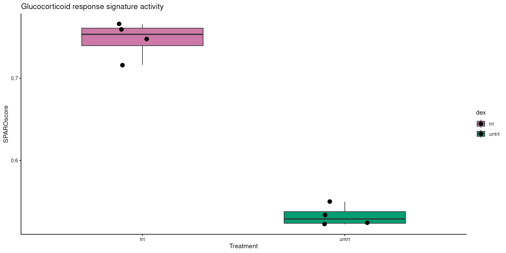
As expected, dexamethasone-treated samples display substantially higher signature scores than untreated controls, demonstrating that SPAROscore successfully captures the biological response induced by the treatment.
The observed difference can be formally evaluated using the non-parametric Wilcoxon ranksum test
wilcox.test(SPAROscore ~ dex, data = metadata)
#>
#> Wilcoxon rank sum exact test
#>
#> data: SPAROscore by dex
#> W = 16, p-value = 0.02857
#> alternative hypothesis: true location shift is not equal to 0Although the dataset contains only eight samples, the treatment effect is sufficiently strong that the glucocorticoid response signature clearly separates the two experimental groups.
Principal component analysis (PCA) is commonly used to visualise sample-to-sample variation in transcriptomic datasets. By colouring samples according to their SPAROscore rather than their treatment group, we can determine whether pathway activity explains the dominant source of variation.
# Create the DGEList object
bulk_dge <- DGEList(counts = counts_data)
# filter genes that are sufficiently informative
bulk_keep <- filterByExpr(bulk_dge)
bulk_dge <- bulk_dge[bulk_keep, keep.lib.sizes = FALSE]
# Calculate normalization factors
bulk_dge <- calcNormFactors(bulk_dge)
#> calcNormFactors has been renamed to normLibSizes
# Obtain log2 counts per million (logCPM)
bulk_logCPM <- edgeR::cpm(bulk_dge, log = TRUE, prior.count=1)
# perform PCA
bulk_pca_res <- prcomp(t(bulk_logCPM), scale. = TRUE)
# create a dataframe with PCs
bulk_pca_df <- data.frame(PC1 = bulk_pca_res$x[,1],
PC2 = bulk_pca_res$x[,2],
SPAROscore = metadata$SPAROscore,
Treatment = metadata$dex)
# calculate the variance explained by PC1 and PC2
pc1_exp <- round(summary(bulk_pca_res)$importance[2,1]*100,1)
pc2_exp <- round(summary(bulk_pca_res)$importance[2,2]*100,1)
# visualise the PCA
bulk_pca_df %>%
ggplot(aes(x = PC1, y = PC2, color = SPAROscore, shape = Treatment)) +
geom_point(size = 4) +
labs(
title = "Principal component analysis",
x=paste0("PC1 (", pc1_exp, "%)"),
y=paste0("PC2 (", pc2_exp, "%)"))+
theme_classic()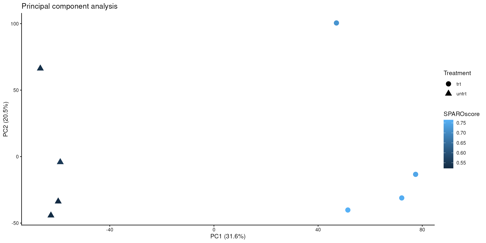
The continuous colour gradient reveals that samples with similar glucocorticoid response scores cluster together in PCA space. This illustrates how pathway-level activity can explain the major sources of biological variation without relying solely on experimental labels.
Gene signature scores summarize the coordinated behaviour of multiple genes. To illustrate this, we compare the SPAROscore with the expression of most differentially expressed glucocorticoid response gene (C7) from the original study.
# assign the top gene from the original study
top_gene <- "ENSG00000112936"
bulk_expr_df <- data.frame(C7_log_expression = log2(counts_data[top_gene, ]+1),
SPAROscore = metadata$SPAROscore,
Treatment = metadata$dex)
# compute correlation of top gene expression vs signature scores
cor(bulk_expr_df$C7_log_expression, bulk_expr_df$SPAROscore)
#> [1] 0.8088692
# plot top gene expression and SPAROscore along with treatment
bulk_expr_df %>%
tidyr::pivot_longer(cols = c("C7_log_expression", "SPAROscore")) %>%
ggplot(aes(x = Treatment, y = value, fill = Treatment)) +
geom_boxplot(width = 0.6, outlier.shape = NA) +
geom_jitter(width = 0.12, size = 3) +
facet_wrap(~name, scales = "free") +
ggtitle("Glucocorticoid response signature activity")+
scale_fill_manual(values = c("#2297E6", "#E69F00"))+
theme_classic()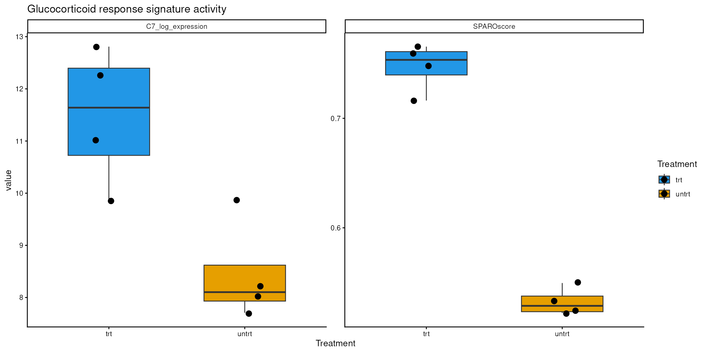
It can be seen that the values overlap for the marker gene expression, but not for the signature scores.
Although expression of individual marker genes often correlates with pathway activity, SPAROscore integrates information across the entire gene signature, making it less sensitive to noise or variability affecting any single gene. This provides a more stable and biologically interpretable measure of pathway activation.
In this example, SPAROscore quantified glucocorticoid pathway activity from bulk RNA-seq data, clearly distinguishing treated from untreated samples. The scores aligned with the main transcriptomic variation and provided an interpretable metric for downstream analyses and visualisation. This illustrates how SPAROscore complements conventional bulk RNA-seq analyses by summarising coordinated biological responses into a single interpretable metric.
Single-cell RNA sequencing (scRNA-seq) enables gene expression to be measured at the resolution of individual cells, revealing cellular heterogeneity that is often masked in bulk RNA-seq experiments. In addition to identifying distinct cell populations, scRNA-seq provides an opportunity to quantify biological pathway activity within each cell, allowing functional differences between cell types and experimental conditions to be explored.
In this example, the IFN-β stimulation dataset from Kang et al., which is available through the SeuratData package will be used. The dataset consists of ~14,000 peripheral blood mononuclear cells (PBMCs) collected from lupus patients before and after stimulation with interferon-β (IFN-β).
To quantify interferon signalling, the Hallmark Interferon Alpha Response gene set from the Molecular Signatures Database (MSigDB) will be used. Although the cells were stimulated with IFN-β, the Hallmark collection contains a single canonical type I interferon response signature, which captures the conserved transcriptional response induced by both IFN-α and IFN-β signalling.
# install the dataset for first-time use
InstallData("ifnb")
#> Installing package into '/__w/_temp/Library'
#> (as 'lib' is unspecified)
# load the ifnb dataset
ifnb <- LoadData("ifnb")
#> Validating object structure
#> Updating object slots
#> Ensuring keys are in the proper structure
#> Ensuring keys are in the proper structure
#> Ensuring feature names don't have underscores or pipes
#> Updating slots in RNA
#> Validating object structure for Assay 'RNA'
#> Object representation is consistent with the most current Seurat version
# check the layer in the RNA assay
Layers(ifnb[["RNA"]])
#> [1] "counts" "data"
# view the metadata of the ifnb seurat object
head(ifnb[[]])
#> orig.ident nCount_RNA nFeature_RNA stim seurat_annotations
#> AAACATACATTTCC.1 IMMUNE_CTRL 3017 877 CTRL CD14 Mono
#> AAACATACCAGAAA.1 IMMUNE_CTRL 2481 713 CTRL CD14 Mono
#> AAACATACCTCGCT.1 IMMUNE_CTRL 3420 850 CTRL CD14 Mono
#> AAACATACCTGGTA.1 IMMUNE_CTRL 3156 1109 CTRL pDC
#> AAACATACGATGAA.1 IMMUNE_CTRL 1868 634 CTRL CD4 Memory T
#> AAACATACGGCATT.1 IMMUNE_CTRL 1581 557 CTRL CD14 MonoThe Seurat object contains gene expression of PBMCs under two
experimental conditions: unstimulated cells (CTRL), and celle stimulated
with interferron-beta (STIM). Along with the experimental condition, the
cell types are also given under the seurat_annotations
metadata column.
The interferon-beta response for every cell can be quantified using SPAROscore
ifnb <- sparoscore(data = ifnb,
assay = "RNA",
layer = "counts",
signatures = ifn_signature,
prefix = "IFN_" )
#> SPAROscore says: Calculating column-wise geometric averages
#> SPAROscore says: Ranking a sparseMatrix object
#> Warning: SPAROscore says: The following 3 signature genes are missing in the
#> input dataset: C1S, TENT5A, WARS1
# check the layer in the RNA assay after scoring
Layers(ifnb[["RNA"]])
#> [1] "counts" "data" "ranks"
# view the metadata after scoring
head(ifnb[[]])
#> orig.ident nCount_RNA nFeature_RNA stim seurat_annotations
#> AAACATACATTTCC.1 IMMUNE_CTRL 3017 877 CTRL CD14 Mono
#> AAACATACCAGAAA.1 IMMUNE_CTRL 2481 713 CTRL CD14 Mono
#> AAACATACCTCGCT.1 IMMUNE_CTRL 3420 850 CTRL CD14 Mono
#> AAACATACCTGGTA.1 IMMUNE_CTRL 3156 1109 CTRL pDC
#> AAACATACGATGAA.1 IMMUNE_CTRL 1868 634 CTRL CD4 Memory T
#> AAACATACGGCATT.1 IMMUNE_CTRL 1581 557 CTRL CD14 Mono
#> rank_caps IFN_SPAROscore
#> AAACATACATTTCC.1 307 0.06218997
#> AAACATACCAGAAA.1 221 0.02943160
#> AAACATACCTCGCT.1 317 0.05782971
#> AAACATACCTGGTA.1 364 0.04984706
#> AAACATACGATGAA.1 188 0.03233134
#> AAACATACGGCATT.1 185 0.05392650After scoring, SPAROscore returns the original Seurat object with the calculated pathway scores added to the cell metadata. In addition, the computed gene ranks are stored as a new layer within the RNA assay, allowing subsequent signatures to be scored without repeating the ranking step.
The newly created IFN_SPAROscore column can now be used in the same way as any other cell-level metadata throughout the Seurat analysis workflow.
Since interferon signalling is expected to increase following stimulation, the distribution of SPAROscore between the two experimental conditions should reflect that.
VlnPlot(ifnb,
features = "IFN_SPAROscore",
group.by = "stim",
pt.size = 0) +
scale_fill_manual(values = c("#2166AC", "#B2182B"))+
theme(legend.position = "none")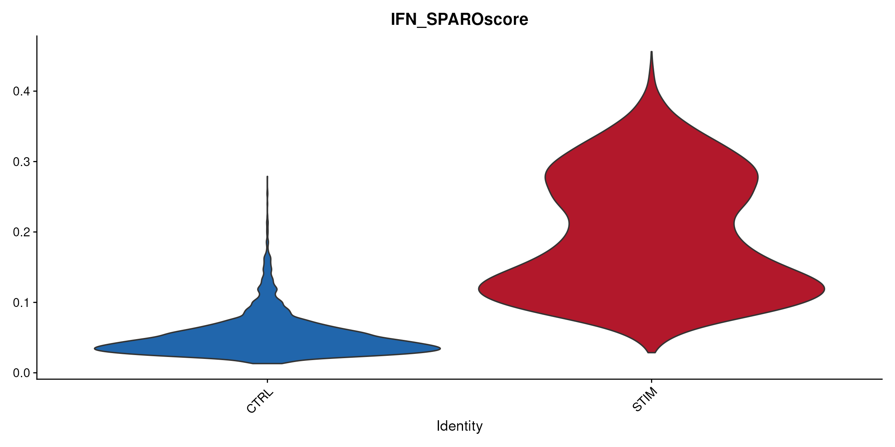
As expected, stimulated cells exhibit higher interferon response scores than unstimulated controls.
The difference between the two experimental groups can also be assessed statistically using the non-parametric Wilcoxon ranksum test.
wilcox.test(IFN_SPAROscore ~ stim, ifnb[[]])
#>
#> Wilcoxon rank sum test with continuity correction
#>
#> data: IFN_SPAROscore by stim
#> W = 1382516, p-value < 2.2e-16
#> alternative hypothesis: true location shift is not equal to 0The highly significant difference reflects the robust activation of interferon-responsive genes following stimulation, and the ability of SPAROscore to quantify that biological phenomenon.
Because pathway scores are calculated for every individual cell, they can be compared across annotated immune cell populations.
VlnPlot(ifnb,
features = "IFN_SPAROscore",
group.by = "seurat_annotations",
pt.size = 0,
flip = TRUE )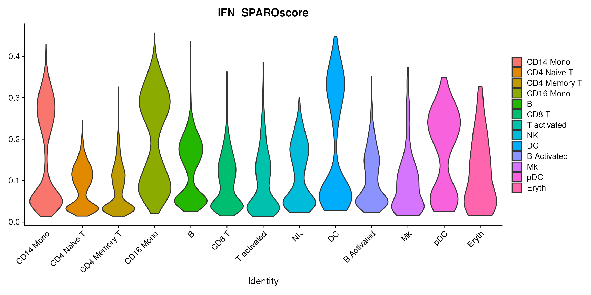
This visualisation highlights differences in interferon signalling across immune cell types. It summarises the pathway activity within each cell population under each experimental condition, making it straightforward to use SPAROscore and identify populations that exhibit the greater transcriptional response following interferon stimulation.
One of the most useful ways to explore pathway activity is to visualise the scores on the UMAP embeddings.
# get umap embedding from the gene expression data
# normalise the gene expression
ifnb <- NormalizeData(ifnb)
# identify the variable genes
ifnb <- FindVariableFeatures(ifnb, selection.method = "vst", nfeatures = 2000)
# scale the data
ifnb <- ScaleData(ifnb, features = rownames(ifnb))
# perform PCA
ifnb <- RunPCA(ifnb, features = VariableFeatures(object = ifnb))
# Run network-based clustering algorithm
ifnb <- FindNeighbors(ifnb, dims = 1:10)
ifnb <- FindClusters(ifnb, resolution = 0.5)
#> Modularity Optimizer version 1.3.0 by Ludo Waltman and Nees Jan van Eck
#>
#> Number of nodes: 13999
#> Number of edges: 469473
#>
#> Running Louvain algorithm...
#> Maximum modularity in 10 random starts: 0.9273
#> Number of communities: 16
#> Elapsed time: 1 seconds
# run umap
ifnb <- RunUMAP(ifnb, dims = 1:10)
# visualise the experimental condition in umap
DimPlot(ifnb, reduction = "umap", group.by = "stim")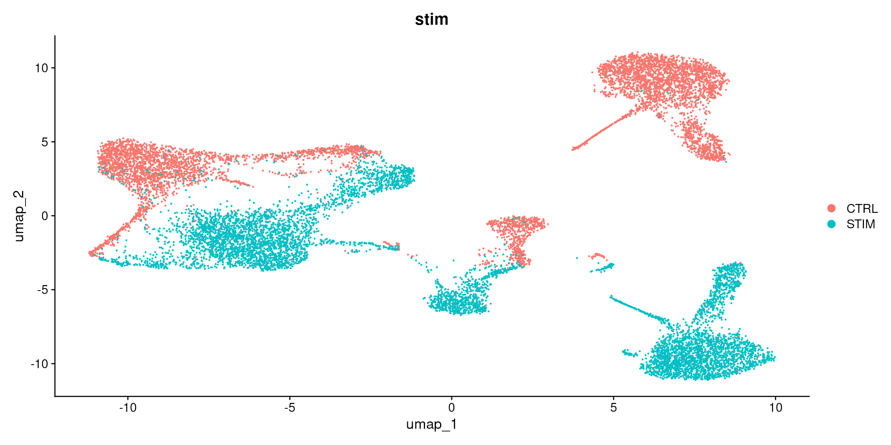
# visualise the SPAROscores in umap
FeaturePlot( ifnb, features = "IFN_SPAROscore",
reduction = "umap") 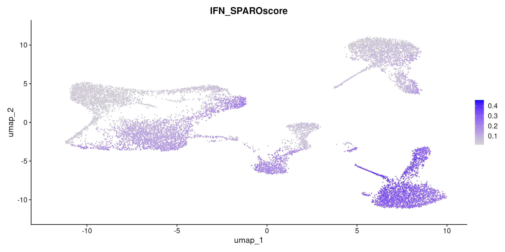
It can be seen that the cells exhibiting strong activation of the interferon pathway are readily identified by SPAROscore, while neighbouring cells with weaker responses remain distinguishable.Since SPAROscore stores the calculated gene ranks within the Seurat object, subsequent pathway analyses can reuse these ranks without repeating the computationally intensive ranking step.
For example, an inflammatory response signature could be scored as follows.
# load the inflammatory response hallmark genes from msigdb
inflammation_signature <- msigdbr(species = "Homo sapiens",collection = "H") %>%
filter(gs_name == "HALLMARK_INFLAMMATORY_RESPONSE") %>%
pull(gene_symbol) %>%
unique()
# compute sparoscores for the new signature with pre-computed ranks
ifnb <- sparoscore(
data = ifnb,
data_has_ranks = TRUE,
assay = "RNA",
layer = "ranks",
signatures = inflammation_signature,
prefix = "Inflammation_"
)
#> Warning: SPAROscore says: The following 30 signature genes are missing in the
#> input dataset: ADGRE1, APLNR, BDKRB1, CCL17, CCL24, CSF3, CX3CL1, CXCL8, GPC3,
#> HAS2, HPN, IL12B, KCNMB2, MEP1A, NDP, NPFFR2, OPRK1, OSMR, PCDH7, ROS1, SELE,
#> SELENOS, SLC28A2, SLC4A4, SLC7A2, TACR1, TACR3, TNFSF15, TNFSF9, VIP
# view the metadata after scoring for the second signature
head(ifnb[[]])
#> orig.ident nCount_RNA nFeature_RNA stim seurat_annotations
#> AAACATACATTTCC.1 IMMUNE_CTRL 3017 877 CTRL CD14 Mono
#> AAACATACCAGAAA.1 IMMUNE_CTRL 2481 713 CTRL CD14 Mono
#> AAACATACCTCGCT.1 IMMUNE_CTRL 3420 850 CTRL CD14 Mono
#> AAACATACCTGGTA.1 IMMUNE_CTRL 3156 1109 CTRL pDC
#> AAACATACGATGAA.1 IMMUNE_CTRL 1868 634 CTRL CD4 Memory T
#> AAACATACGGCATT.1 IMMUNE_CTRL 1581 557 CTRL CD14 Mono
#> rank_caps IFN_SPAROscore RNA_snn_res.0.5 seurat_clusters
#> AAACATACATTTCC.1 307 0.06218997 1 1
#> AAACATACCAGAAA.1 221 0.02943160 1 1
#> AAACATACCTCGCT.1 317 0.05782971 1 1
#> AAACATACCTGGTA.1 364 0.04984706 14 14
#> AAACATACGATGAA.1 188 0.03233134 3 3
#> AAACATACGGCATT.1 185 0.05392650 1 1
#> Inflammation_SPAROscore
#> AAACATACATTTCC.1 0.05980613
#> AAACATACCAGAAA.1 0.09259822
#> AAACATACCTCGCT.1 0.04568670
#> AAACATACCTGGTA.1 0.02954905
#> AAACATACGATGAA.1 0.01371593
#> AAACATACGGCATT.1 0.05379840This approach is particularly advantageous when evaluating many gene signatures, as the gene ranking only needs to be performed once.
While single-cell analyses reveal pathway activity at the level of individual cells, it is often informative to summarise expression profiles across biologically similar cells. The pseudo-bulk approach aggregates gene expression within each cell population, reducing cell-to-cell variability while retaining cell type specificity. Pseudo-bulk analyses are commonly used for differential expression and pathway analyses, as they provide more stable estimates of average expression for each biological group.
Here, we aggregate the IFN-β dataset by both the cell type annotation (seurat_annotations) and stimulation condition (stim). We then compute SPAROscore on the resulting pseudo-bulk expression matrix to quantify interferon pathway activity across each cell population.
pseudobulk_ifn <- AggregateExpression(ifnb,
group.by = c("seurat_annotations", "stim"),
assays = "RNA",
return.seurat = TRUE,
slot = "counts")
#> Centering and scaling data matrix
pseudobulk_ifn[[]]
#> orig.ident seurat_annotations stim
#> CD14 Mono_CTRL CD14 Mono_CTRL CD14 Mono CTRL
#> CD14 Mono_STIM CD14 Mono_STIM CD14 Mono STIM
#> CD4 Naive T_CTRL CD4 Naive T_CTRL CD4 Naive T CTRL
#> CD4 Naive T_STIM CD4 Naive T_STIM CD4 Naive T STIM
#> CD4 Memory T_CTRL CD4 Memory T_CTRL CD4 Memory T CTRL
#> CD4 Memory T_STIM CD4 Memory T_STIM CD4 Memory T STIM
#> CD16 Mono_CTRL CD16 Mono_CTRL CD16 Mono CTRL
#> CD16 Mono_STIM CD16 Mono_STIM CD16 Mono STIM
#> B_CTRL B_CTRL B CTRL
#> B_STIM B_STIM B STIM
#> CD8 T_CTRL CD8 T_CTRL CD8 T CTRL
#> CD8 T_STIM CD8 T_STIM CD8 T STIM
#> T activated_CTRL T activated_CTRL T activated CTRL
#> T activated_STIM T activated_STIM T activated STIM
#> NK_CTRL NK_CTRL NK CTRL
#> NK_STIM NK_STIM NK STIM
#> DC_CTRL DC_CTRL DC CTRL
#> DC_STIM DC_STIM DC STIM
#> B Activated_CTRL B Activated_CTRL B Activated CTRL
#> B Activated_STIM B Activated_STIM B Activated STIM
#> Mk_CTRL Mk_CTRL Mk CTRL
#> Mk_STIM Mk_STIM Mk STIM
#> pDC_CTRL pDC_CTRL pDC CTRL
#> pDC_STIM pDC_STIM pDC STIM
#> Eryth_CTRL Eryth_CTRL Eryth CTRL
#> Eryth_STIM Eryth_STIM Eryth STIMEach column in the expression data now corresponds to a unique combination of cell type and treatment (for example, “B_CTRL” or “B_STIM”), while rows represent genes.
pseudobulk_ifn <- sparoscore(data = pseudobulk_ifn,
signatures = ifn_signature,
assay = "RNA",
layer = "counts")
#> SPAROscore says: Calculating column-wise geometric averages
#> SPAROscore says: Ranking a sparseMatrix object
#> Warning: SPAROscore says: The following 3 signature genes are missing in the
#> input dataset: C1S, TENT5A, WARS1
pseudobulk_ifn[[]] %>%
ggplot(aes(y = seurat_annotations, x = SPAROscore, fill = stim)) +
geom_col(position = position_dodge(width = 0.8)) +
theme_classic() +
scale_fill_manual(values = c("#2166AC", "#B2182B"))+
theme()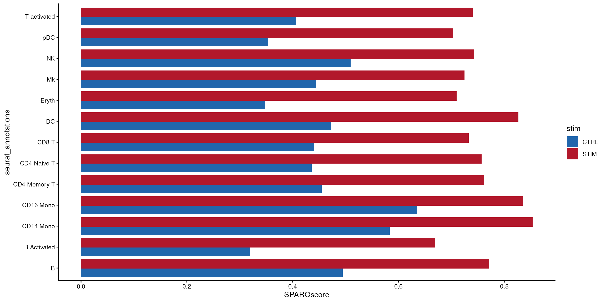
Compared with the single-cell visualisations, the pseudo-bulk analysis emphasises the average interferon response within each immune cell population. Cell types exhibiting the strongest pathway activation following IFN-β stimulation can be readily identified, while differences between stimulated and control samples remain easy to interpret.Overall, pseudo-bulk analyses with SPAROscore complement cell-level investigations by providing a robust summary of pathway activity within biologically meaningful groups.
Since SPAROscore computes scores in a robust, sparsity-adaptive manner (and operates on any matrix-like expression object), it can be seamlessly applied to bulk RNA-seq data, pseudo-bulk profiles, and individual cells without any modification.
In such cross-modal analyses, SPAROscore computes biologically interprettable scores that are feasible to be compared and analysed together.
This example demonstrates how SPAROscore integrates naturally into a standard single-cell RNA-seq workflow. The computed pathway scores provide an interpretable measure of interferon signalling for every individual cell, enabling biological responses to be visualised on low-dimensional embeddings, compared across experimental conditions, and summarised within annotated cell populations using pseudo-bulk aggregations.
By reducing the expression of an entire gene signature to a single quantitative metric, SPAROscore complements conventional scRNA-seq gene analyses and facilitates the exploration of functional heterogeneity in single-cell datasets.
Spatial transcriptomics extends conventional RNA sequencing by preserving the spatial locations of transcriptional measurements within intact tissue sections. In addition to quantifying gene expression, spatial transcriptomics enables biological processes to be investigated within their anatomical context, allowing molecular activity to be related directly to tissue morphology and organization.
In this example, the Visium human dorsolateral prefrontal cortex (DLPFC) dataset available through the SpatialLIBD package is used. This dataset was generated using the 10x Genomics Visium platform and comprises multiple human brain sections with manually annotated cortical layers.
Rather than scoring a signalling pathway, the oligodendrocyte marker gene signature will be quantified. Oligodendrocyte are abundant in the white matter, but not abundant in the cortical layers. Consequently, oligodendrocyte signature scores are expected to be high within the white matter and substantially lower in the cortex.
For computational efficiency, we analyse one representative tissue section.
# load the DLPFC Visium dataset
dlpfc_spe <- fetch_data(type = "spe")
#> 2026-07-21 03:10:57.637712 loading file /github/home/.cache/R/BiocFileCache/19f5718c0a8d_Human_DLPFC_Visium_processedData_sce_scran_spatialLIBD.Rdata%3Fdl%3D1
# check some domain-level metadata present in the object
head(colData(dlpfc_spe)[,c("sample_id", "spatialLIBD")])
#> DataFrame with 6 rows and 2 columns
#> sample_id spatialLIBD
#> <character> <factor>
#> AAACAACGAATAGTTC-1 151507 L1
#> AAACAAGTATCTCCCA-1 151507 L3
#> AAACAATCTACTAGCA-1 151507 L1
#> AAACACCAATAACTGC-1 151507 WM
#> AAACAGCTTTCAGAAG-1 151507 L6
#> AAACAGGGTCTATATT-1 151507 L6The object is a SpatialExperiment, containing spot-level gene expression counts, spatial coordinates, tissue images, and manually annotated cortical layers.
# for simplicity of the vignette, work with one sample
dlpfc_spe <- dlpfc_spe[ , dlpfc_spe$sample_id == "151675"]
# visualise the cortical annotations
vis_clus(spe = dlpfc_spe,
colors = libd_layer_colors,
clustervar = "spatialLIBD",
point_size = 1.5)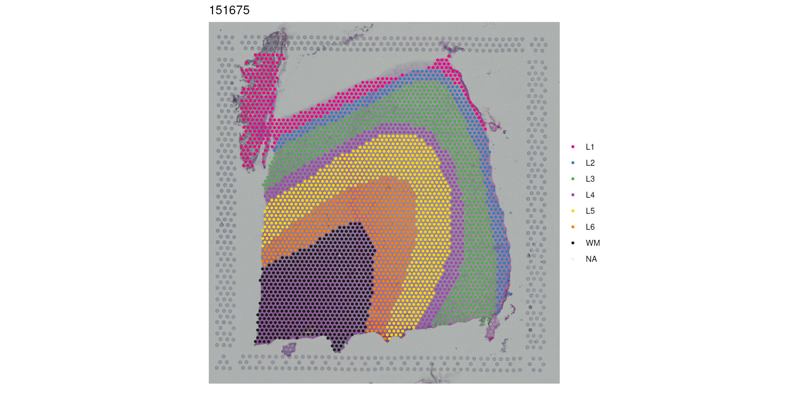
For demonstration purposes, we use a collection of well-established oligodendrocyte marker genes.
oligo_signature <- c(
"ENSG00000167748", "ENSG00000166923", "ENSG00000174607", "ENSG00000135678",
"ENSG00000089123", "ENSG00000183018", "ENSG00000129538", "ENSG00000136937",
"ENSG00000105695", "ENSG00000168314", "ENSG00000184113", "ENSG00000124920",
"ENSG00000054274", "ENSG00000122507", "ENSG00000086205", "ENSG00000114867",
"ENSG00000169532", "ENSG00000166292", "ENSG00000141338"
)
# verify if the gene representationas are consistent in signature and data
head(oligo_signature %in% rownames(dlpfc_spe))
#> [1] TRUE TRUE TRUE TRUE TRUE TRUESince SpatialExperiment objects are supported directly by SPAROscore, pathway scores can be computed without extracting the expression matrix.
dlpfc_spe <- sparoscore(data = dlpfc_spe,
assay = "counts",
signatures = oligo_signature,
prefix = "Oligo_")
#> SPAROscore says: Calculating column-wise geometric averages
#> SPAROscore says: Ranking a sparseMatrix object
#> Warning: SPAROscore says: The following 2 signature genes are missing in the
#> input dataset: ENSG00000054274, ENSG00000169532
# view the scores appended to colData
head(colData(dlpfc_spe)[,c("sample_id", "spatialLIBD", "Oligo_SPAROscore")])
#> DataFrame with 6 rows and 3 columns
#> sample_id spatialLIBD Oligo_SPAROscore
#> <character> <factor> <numeric>
#> AAACAACGAATAGTTC-1 151675 L1 0.0000000
#> AAACAAGTATCTCCCA-1 151675 L3 0.0593458
#> AAACACCAATAACTGC-1 151675 WM 0.1759591
#> AAACAGAGCGACTCCT-1 151675 L3 0.0000000
#> AAACAGGGTCTATATT-1 151675 L5 0.0000000
#> AAACAGTGTTCCTGGG-1 151675 WM 0.0881556The resulting pathway scores are appended to the colData of the SpatialExperiment object, while the computed gene ranks are stored as an additional assay for reuse in subsequent analyses.
One of the major advantages of spatial transcriptomics is the ability to visualise biological processes within their anatomical context.
Using the spot coordinates stored in the SpatialExperiment object, the SPAROscore can be projected directly onto the tissue section.
vis_gene(spe = dlpfc_spe,
geneid = "Oligo_SPAROscore",
spatial = TRUE,
point_size = 1.5)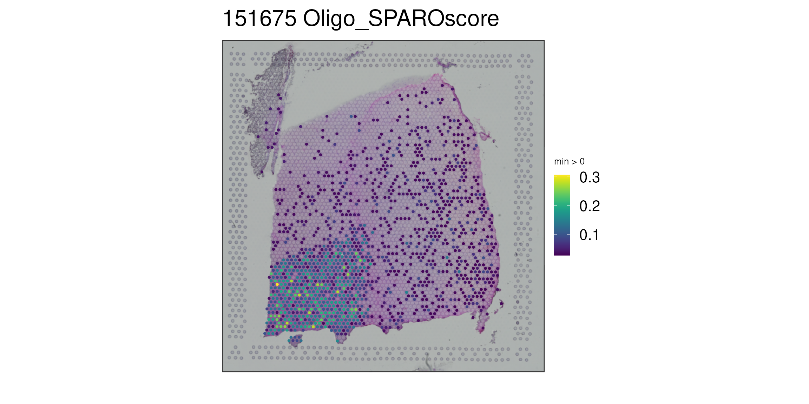
Higher oligodendrocyte signature scores are observed throughout the white matter, whereas substantially lower scores (mostly zero) are evident within the cortex layers as illustrated by the colours being empty for most spatial spots outside the white matter.This agrees with the known cellular composition of the tissue and demonstrates that SPAROscore successfully captures the spatial distribution of oligodendrocyte gene expression.
The manual annotations for each cortical layer enables quantitative comparison of oligodendrocyte pathway activity.
# differentiate white matter from cortex based on annotations
dlpfc_metadata <- as.data.frame(colData(dlpfc_spe)) %>%
filter(layer_guess != "NA") %>% # remove missing annotations
mutate(Region = ifelse(layer_guess == "WM",
"White_Matter", "Cortex"))
dlpfc_metadata %>%
ggplot(aes(y = reorder(Region, Oligo_SPAROscore, median),
x = Oligo_SPAROscore,
fill = Region)) +
geom_boxplot() +
labs(x = "Oligo SPAROscore",
y = "DLPFC Regions",
title = "Pathway activity in cortical layers") +
scale_fill_manual(values = c("#56B4E9", "#D55E00"))+
theme_classic() +
theme(legend.position = "none") 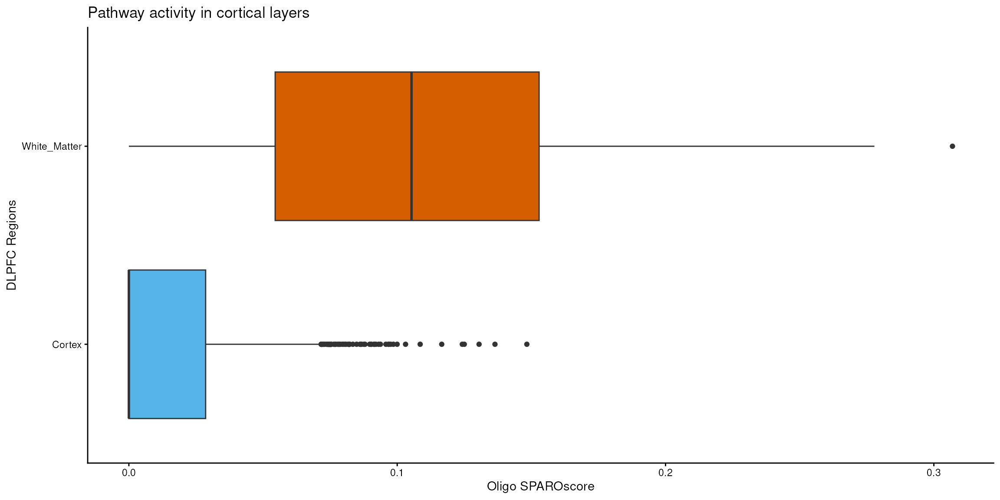
The oligodendrocyte signature exhibits high scores in the white matter butTo further illustrate the difference, oligodendrocyte signature scores between cortical spots and white matter can be compared statistically.
wilcox.test(Oligo_SPAROscore ~ Region, data = dlpfc_metadata)
#>
#> Wilcoxon rank sum test with continuity correction
#>
#> data: Oligo_SPAROscore by Region
#> W = 139971, p-value < 2.2e-16
#> alternative hypothesis: true location shift is not equal to 0The significant reduction in oligodendrocyte signature scores within grey matter provides quantitative evidence that SPAROscore accurately recovers known anatomical organization from spatial transcriptomics data.
This example demonstrates how SPAROscore can be integrated directly into spatial transcriptomics analyses. By quantifying a oligodendrocyte gene signature, the method successfully distinguishes cortical grey matter from white matter and recovers known tissue architecture using only gene expression information.
Such analyses extend naturally to signalling pathways, cell-type signatures and disease-associated gene programmes, providing a flexible framework for investigating biological processes in their spatial context.
This vignette demonstrates how SPAROscore can be integrated into analysis workflows spanning the three major transcriptomics technologies: bulk RNA sequencing, single-cell RNA sequencing, and spatial transcriptomics.
Although these technologies differ substantially in their data structures and biological resolution, SPAROscore provides a unified framework for quantifying gene signature activity by ranking genes within each sample, cell, or spatial domain.
Together, these analyses demonstrate that SPAROscore provides a flexible and scalable approach for pathway-level analysis across diverse transcriptomics applications. By producing interpretable signature scores that are robust to differences in sequencing depth, sparsity, and data modality, SPAROscore enables biologically meaningful comparisons across samples, cells, and spatial domains while integrating naturally into existing Bioconductor and Seurat workflows.
For detailed information on the supported input data structures, gene signature representations, and object-specific behaviour, see the Data Structures vignette: Data structures
A subsequent vignette, on advanced usage, describes additional functionality including usage of custom caps to fine tune the adaptive rank capping strategy of SPAROscore, performance optimisation, tertiary parameter tuning, and advanced scoring options for specialised analysis workflows. The advance usage vignette can be found here: Advanced options
sessionInfo()
#> R version 4.6.1 (2026-06-24)
#> Platform: x86_64-pc-linux-gnu
#> Running under: Ubuntu 24.04.4 LTS
#>
#> Matrix products: default
#> BLAS: /usr/lib/x86_64-linux-gnu/openblas-pthread/libblas.so.3
#> LAPACK: /usr/lib/x86_64-linux-gnu/openblas-pthread/libopenblasp-r0.3.26.so; LAPACK version 3.12.0
#>
#> locale:
#> [1] LC_CTYPE=en_US.UTF-8 LC_NUMERIC=C
#> [3] LC_TIME=en_US.UTF-8 LC_COLLATE=en_US.UTF-8
#> [5] LC_MONETARY=en_US.UTF-8 LC_MESSAGES=en_US.UTF-8
#> [7] LC_PAPER=en_US.UTF-8 LC_NAME=C
#> [9] LC_ADDRESS=C LC_TELEPHONE=C
#> [11] LC_MEASUREMENT=en_US.UTF-8 LC_IDENTIFICATION=C
#>
#> time zone: UTC
#> tzcode source: system (glibc)
#>
#> attached base packages:
#> [1] stats4 stats graphics grDevices utils datasets methods
#> [8] base
#>
#> other attached packages:
#> [1] future_1.70.0 ifnb.SeuratData_3.1.0
#> [3] ggspavis_1.19.1 spatialLIBD_1.25.1
#> [5] SpatialExperiment_1.23.0 scater_1.41.2
#> [7] scuttle_1.23.1 SingleCellExperiment_1.35.2
#> [9] msigdbr_26.1.0 SeuratData_0.2.2.9002
#> [11] Seurat_5.5.1 SeuratObject_5.4.0
#> [13] sp_2.2-3 edgeR_4.11.4
#> [15] limma_3.69.2 dplyr_1.2.1
#> [17] ggplot2_4.0.3 airway_1.33.0
#> [19] SummarizedExperiment_1.43.0 Biobase_2.73.1
#> [21] GenomicRanges_1.65.1 Seqinfo_1.3.0
#> [23] IRanges_2.47.2 S4Vectors_0.51.5
#> [25] BiocGenerics_0.59.10 generics_0.1.4
#> [27] MatrixGenerics_1.25.0 matrixStats_1.5.0
#> [29] SPAROscore_0.99.0
#>
#> loaded via a namespace (and not attached):
#> [1] bitops_1.0-9 fs_2.1.0 spatstat.sparse_3.2-0
#> [4] httr_1.4.8 RColorBrewer_1.1-3 doParallel_1.0.17
#> [7] tools_4.6.1 sctransform_0.4.3 DT_0.34.0
#> [10] R6_2.6.1 lazyeval_0.2.3 uwot_0.2.4
#> [13] GetoptLong_1.1.1 withr_3.0.3 gridExtra_2.3.1
#> [16] progressr_1.0.0 cli_3.6.6 textshaping_1.0.5
#> [19] spatstat.explore_3.8-1 fastDummies_1.7.6 labeling_0.4.3
#> [22] sass_0.4.10 S7_0.2.2 spatstat.data_3.1-9
#> [25] ggridges_0.5.7 pbapply_1.7-4 pkgdown_2.2.1
#> [28] Rsamtools_2.29.0 systemfonts_1.3.2 sessioninfo_1.2.4
#> [31] parallelly_1.48.0 attempt_0.3.1 RSQLite_3.53.3
#> [34] BiocIO_1.23.3 shape_1.4.6.1 ica_1.0-3
#> [37] spatstat.random_3.5-0 Matrix_1.7-5 ggbeeswarm_0.7.3
#> [40] abind_1.4-8 lifecycle_1.0.5 yaml_2.3.12
#> [43] SparseArray_1.13.2 BiocFileCache_3.3.0 Rtsne_0.17
#> [46] paletteer_1.7.0 grid_4.6.1 blob_1.3.0
#> [49] promises_1.5.0 ExperimentHub_3.3.0 crayon_1.5.3
#> [52] miniUI_0.1.2 lattice_0.22-9 beachmat_2.29.0
#> [55] cowplot_1.2.0 cigarillo_1.3.1 KEGGREST_1.53.1
#> [58] magick_2.9.1 pillar_1.11.1 knitr_1.51
#> [61] ComplexHeatmap_2.29.0 rjson_0.2.23 future.apply_1.20.2
#> [64] codetools_0.2-20 glue_1.8.1 spatstat.univar_3.2-0
#> [67] data.table_1.18.4 vctrs_0.7.3 png_0.1-9
#> [70] spam_2.11-4 gtable_0.3.6 assertthat_0.2.1
#> [73] rematch2_2.1.2 cachem_1.1.0 xfun_0.60
#> [76] S4Arrays_1.13.0 mime_0.13 ggside_0.4.1
#> [79] survival_3.8-9 iterators_1.0.14 statmod_1.5.2
#> [82] fitdistrplus_1.2-6 ROCR_1.0-12 nlme_3.1-170
#> [85] bit64_4.8.2 filelock_1.0.3 RcppAnnoy_0.0.23
#> [88] bslib_0.11.0 irlba_2.3.7 vipor_0.4.7
#> [91] KernSmooth_2.23-26 otel_0.2.0 colorspace_2.1-3
#> [94] DBI_1.3.0 tidyselect_1.2.1 bit_4.6.0
#> [97] compiler_4.6.1 curl_7.1.0 httr2_1.3.0
#> [100] BiocNeighbors_2.7.2 desc_1.4.3 DelayedArray_0.39.3
#> [103] plotly_4.12.0 rtracklayer_1.73.0 scales_1.4.0
#> [106] lmtest_0.9-40 rappdirs_0.3.4 stringr_1.6.0
#> [109] digest_0.6.39 goftest_1.2-3 spatstat.utils_3.2-4
#> [112] rmarkdown_2.31 benchmarkmeData_2.0.0 XVector_0.53.0
#> [115] htmltools_0.5.9 pkgconfig_2.0.3 sparseMatrixStats_1.25.0
#> [118] dbplyr_2.6.0 fastmap_1.2.0 rlang_1.3.0
#> [121] GlobalOptions_0.1.4 htmlwidgets_1.6.4 shiny_1.14.0
#> [124] farver_2.1.2 jquerylib_0.1.4 zoo_1.8-15
#> [127] jsonlite_2.0.0 BiocParallel_1.47.0 config_0.3.2
#> [130] RCurl_1.98-1.19 BiocSingular_1.29.0 magrittr_2.0.5
#> [133] dotCall64_1.2 patchwork_1.3.2 Rcpp_1.1.2
#> [136] babelgene_22.9 viridis_0.6.5 reticulate_1.46.0
#> [139] stringi_1.8.7 MASS_7.3-66 AnnotationHub_4.3.2
#> [142] plyr_1.8.9 parallel_4.6.1 listenv_1.0.0
#> [145] ggrepel_0.9.8 deldir_2.0-4 Biostrings_2.81.5
#> [148] splines_4.6.1 tensor_1.5.1 circlize_0.4.18
#> [151] locfit_1.5-9.12 igraph_2.3.3 spatstat.geom_3.8-1
#> [154] RcppHNSW_0.7.0 reshape2_1.4.5 ScaledMatrix_1.21.0
#> [157] XML_3.99-0.23 BiocVersion_3.24.0 evaluate_1.0.5
#> [160] golem_1.0.1 BiocManager_1.30.27 foreach_1.5.2
#> [163] httpuv_1.6.17 RANN_2.6.2 tidyr_1.3.2
#> [166] purrr_1.2.2 polyclip_1.10-7 benchmarkme_1.0.8
#> [169] clue_0.3-68 scattermore_1.2 BiocBaseUtils_1.15.1
#> [172] rsvd_1.0.5 xtable_1.8-8 restfulr_0.0.17
#> [175] RSpectra_0.16-2 later_1.4.8 viridisLite_0.4.3
#> [178] ragg_1.5.2 tibble_3.3.1 GenomicAlignments_1.49.1
#> [181] memoise_2.0.1 beeswarm_0.4.0 AnnotationDbi_1.75.0
#> [184] cluster_2.1.8.2 shinyWidgets_0.9.1 globals_0.19.1